2022年北京市中考物理试题 · 选择题 第11、12、13、14、15题 · 对应解析
11. 甲、乙、丙三个小球的质量m和体积V如下表所示，将它们浸没在水中释放，在其稳定后，三个小球所受的浮力分别为
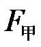
、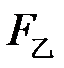
和。下列判断正确的是（ ）小球 | 甲 | 乙 | 丙 |
m/g | 30 | 40 | 54 |
V/cm3 | 60 | 50 | 20 |
A.
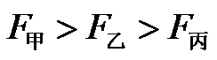
B.C.
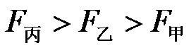
D.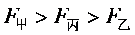
【答案】B
【解析】
【详解】由表格数据可知，甲球的密度为
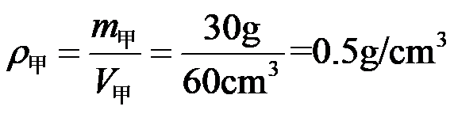
乙球的密度为
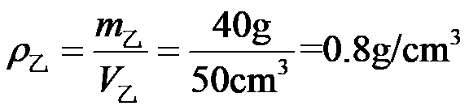
丙球的密度为
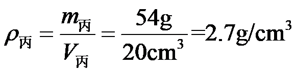
由于甲球和乙球密度小于水的密度，所以甲球和乙球最终会漂浮在水面，甲球漂浮时，浮力为
乙球漂浮时，浮力为
由于丙球密度大于水的密度，所以丙球最终会沉底，由
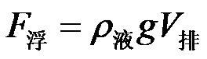
可知，浮力为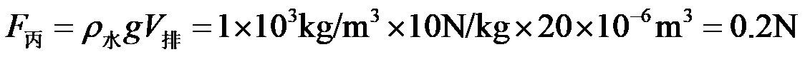
综上所述，，故B正确，ACD错误。
故选B。
12. 如图所示，两个圆柱形容器甲和乙放在水平桌面上，甲容器底面积大于乙容器底面积，它们分别装有体积相等的液体，甲容器中液体的密度为，乙容器中液体的密度为
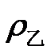
。液体内A、B两点到容器底部的距离相等，其压强分别为、。若两容器底部受到的液体压强相等，则下列判断正确的是（ ）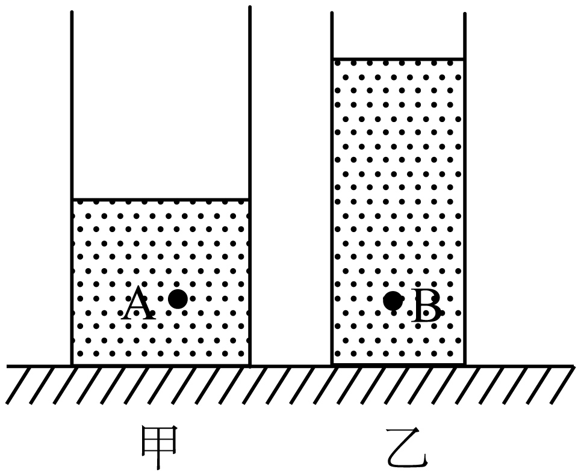
A.
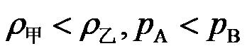
B.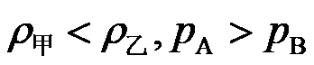
C.
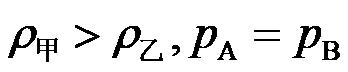
D.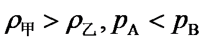
【答案】D
【解析】
【详解】由于两容器底部受到的液体压强相等，甲容器底面积大于乙容器底面积，由
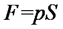
可知，甲容器底部受到的液体压力F甲大于乙容器底部受到的液体压力F乙，由于G甲液=F甲
G乙液=F乙
所以
G甲液>G乙液
由G=mg可知
m甲液>m乙液
由于甲乙两种液体的体积相等，由
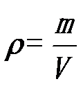
可知甲>乙
由于A点到容器底部的深度等于B点到容器底部的深度，则两点以下部分液体的压强大小关系为
pA下>pB下
若两容器底部受到的液体压强相等，则两点处受到液体的大小关系为
故ABC错误，故D正确。
故选D。
二、多项选择题（下列每题均有四个选项，其中符合题意的选项均多于一个。共6分，每题2分。每题选项全选对的得2分，选对但不全的得1分，有错选的不得分）
13. 下列说法正确的是（ ）
A. 沿海地区通常比内陆地区昼夜温差小，原因之一是水的比热容比沙石的比热容大
B. 冬天双手互搓，手的温度升高，是通过热传递的方式改变手的内能
C. 长时间紧压在一起的铅片和金片互相渗入，是由于发生了扩散现象
D. 汽油机的做功冲程中，燃气对外做功，将内能转化为机械能
【答案】ACD
【解析】
【详解】A．水的比热容比砂石的比热容大，相同质量的水和沙石吸收或放出相同热量时，根据
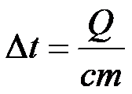
可知，水的温度变化小于沙石的温度的温度变化，故沿海地区比内陆地区昼夜温差小，故A正确；
B．冬天双手互搓，双手摩擦做功，手的内能增加，温度升高，故B错误；
C．长时间紧压在一起的铅片和金片互相渗入，是因为物体内部的分子不停的做无规则运动进入了对方内部，属于扩散现象，故C正确；
D．汽油机的做功冲程中，燃气燃烧释放内能，推动活塞做功，内能转化为机械能，故D正确。
故选ACD。
14. 额定电压相同的电热水壶、电烤箱和电饭锅正常工作过程中消耗的电能W和通电时间t的关系如图所示。关于这三个用电器，下列判断正确的是（ ）
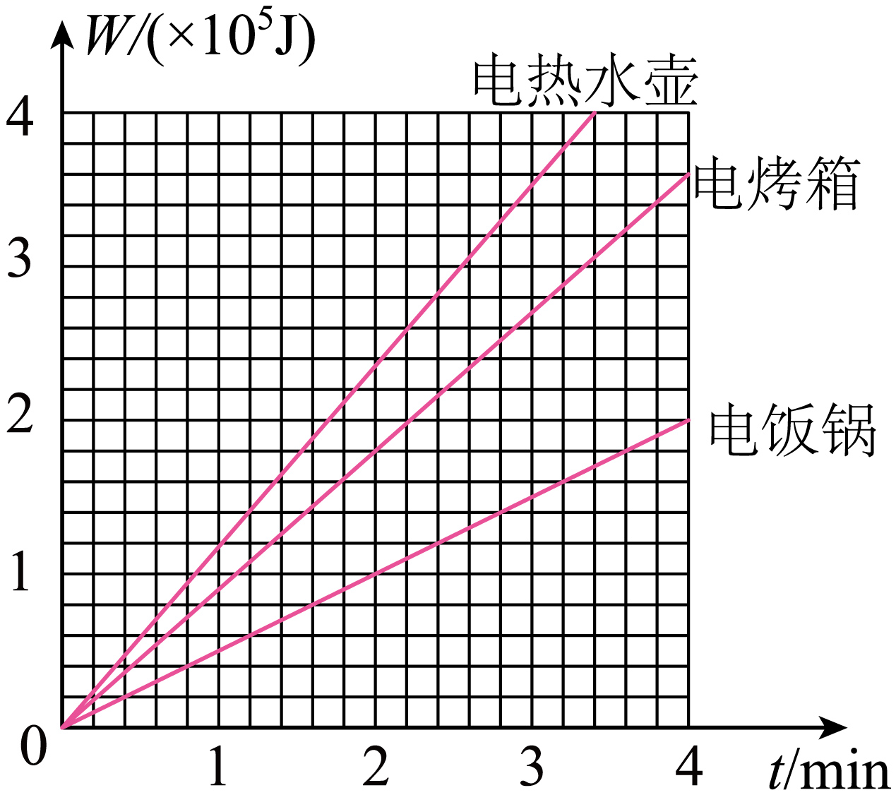
A. 正常工作时，电热水壶比电烤箱产生的热量少
B. 正常工作时，电热水壶比电饭锅的功率大
C. 正常工作时，通过电饭锅的电流最小
D. 在一个月内，电热水壶消耗的电能一定最多
【答案】BC
【解析】
【详解】A．正常工作时，若工作相同时间，电热水壶比电烤箱消耗的电能多，则电热水壶比电烤箱产生的热量多，故A错误；
B．正常工作时，相同时间内，电热水壶比电饭锅消耗的电能多，根据
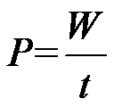
可知，电热水壶的功率大于电饭锅的功率，故B正确；
C．正常工作时，用电器两端的电压相同，相同时间内，电饭锅消耗的电能最少，根据
W=UIt
可知，通过电饭锅的电流最小，故C正确；
D．工作相同时间，电热水壶消耗的电能最多，但是在一个月内，电热水壶工作的时间有可能较短，消耗的电能就不一定最多，故D错误。
故选BC。
15. 如图所示，工人站在水平台面上用滑轮组提货物。工人第一次竖直向上用200N的力拉绳子时，货物未离开水平地面；第二次竖直向上拉动绳子，使货物以0.09m/s的速度匀速上升。已知工人体重为600N，货物重为900N，货物与地面的接触面积为
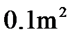
，动滑轮重为100N。不计滑轮组的绳重和摩擦，下列说法正确的是（ ）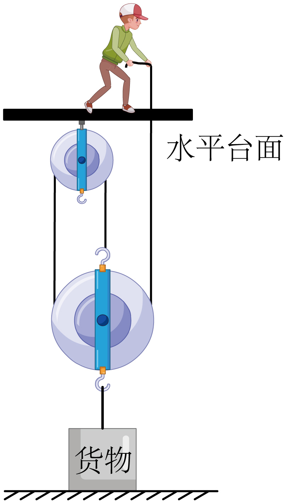
A. 第一次拉绳子时，工人对水平台面的压力为800N
B. 第一次拉绳子时，货物对地面的压强为4000Pa
C. 第二次拉绳子的过程中，该滑轮组的机械效率为90%
D. 第二次拉绳子的过程中，工人拉力的功率为81W
【答案】ABC
【解析】
【详解】A．工人第一次竖直向上用200N的力拉绳子时，绳子也在用200N的力竖直向下拉工人，所以工人对水平台面的压力为
故A正确；
B．由于滑轮组上承担重量的绳子股数n=3，每股绳子受到的拉力为200N，所以货物和动滑轮受到绳子的拉力为
由于动滑轮重为100N，所以货物受到的拉力为
由于货物重为900N，所以货物对地面的压力为
货物与地面的接触面积为，所以货物对地面的压强为
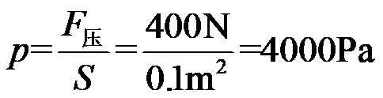
故B正确；
C．第二次拉绳子时，绳子自由端的拉力为
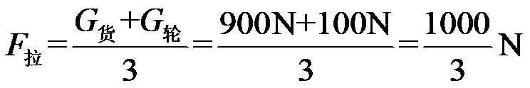
滑轮组的机械效率为
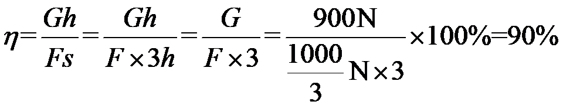
故C正确；
D．货物以0.09m/s的速度匀速上升，绳子移动的速度为
工人拉力的功率为
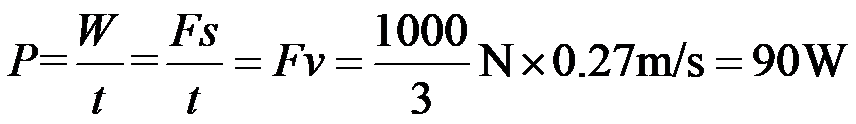
故D错误。
故选ABC。
第二部分
三、实验探究题（共28分，16题2分，17、19、20、22、23题各4分，18、21题各3分）